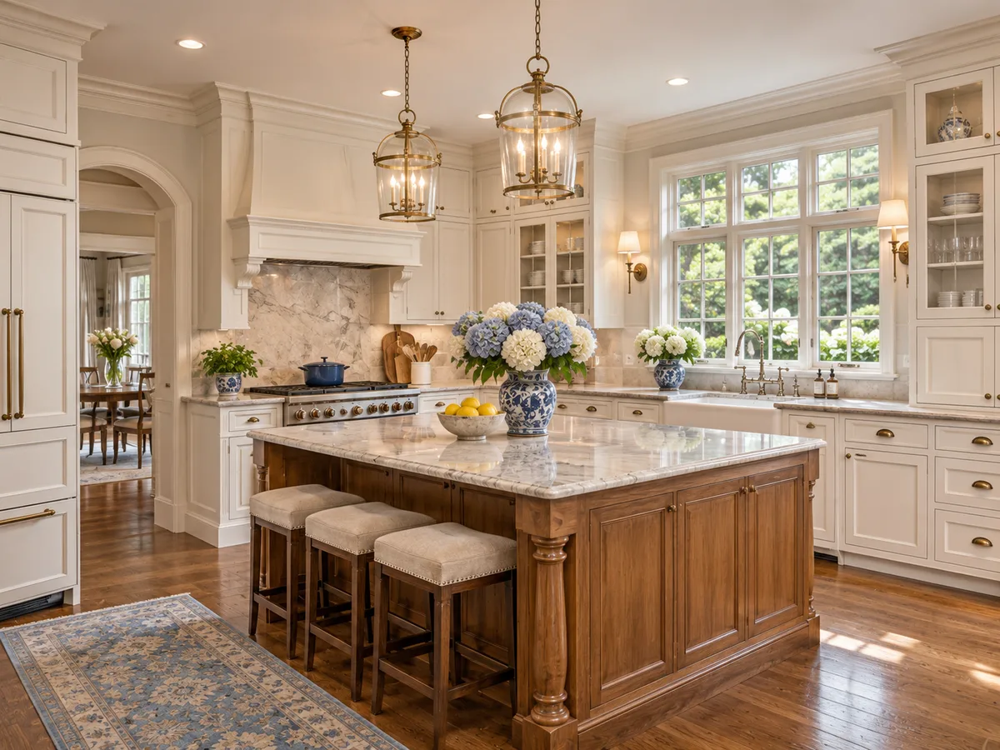

BERGEN COUNTY · PURELUX CLEANING
House cleaning
in Fair Lawn.
A clear baseline for dependable weekly or biweekly care.
For an active Fair Lawn household, start by separating reset work from ongoing upkeep. Kitchen and bathroom condition, hardwood floors, and traffic patterns help shape the first visit and recurring plan.
Plan a clean in Fair Lawn →Your town is preselected. Availability is confirmed individually.

A PLAN FOR YOUR PROPERTY
Start with
what matters here.
Around town: Radburn, River Road, Broadway. Confirm the exact property location in your request.
- Does your home need a first reset before regular maintenance?
- Which hardwood or high-traffic areas need special attention?
- Would weekly, biweekly, or monthly care fit your household?
CHOOSE A DIRECTION
Cleaning options
for Fair Lawn.
Read the service scope, then carry your town into the request. Your home’s condition determines the recommendation.
THE PURELUX PROJECT GALLERY
See the work. Read the details.
Explore original project photos, before-and-after details, and their documented locations in one place.
BEFORE YOU REQUEST
A few useful answers.
Should I start with deep cleaning?+
If the home needs a reset, Purelux recommends establishing a clean baseline before recurring maintenance. The recommendation depends on the current condition.
What determines my estimate?+
Property size, current condition, service type, add-ons, timing, and frequency shape the proposal. Request a personalized estimate; your request does not calculate an instant price or reserve an appointment.
CLEAR SCOPE BEFORE COMMITMENT
A clean planned
around your Fair Lawn home.
Share the details that shape a useful quote. Review your scope and pricing before approving anything.
EXPLORE NEARBY